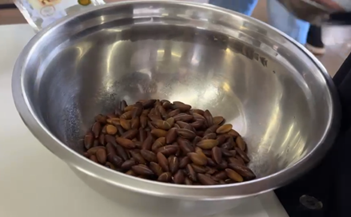
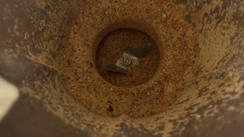
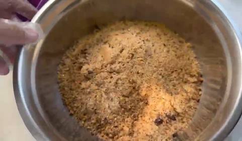

Etapa 1
Coleta e Seleção
Os frutos do baru são coletados no Cerrado e suas castanhas são selecionadas para garantir qualidade e sabor.
Fonte: EMBRAPA Cerrados.
Receita Tradicional
A Paçoca de Baru é produzida com ingredientes simples e naturais, valorizando o sabor característico da castanha de baru, um fruto típico do Cerrado brasileiro.
Fonte: EMBRAPA Cerrados e pesquisas sobre a castanha de baru.


Etapa 1
Os frutos do baru são coletados no Cerrado e suas castanhas são selecionadas para garantir qualidade e sabor.
Fonte: EMBRAPA Cerrados.

Etapa 2
O baru torrado é triturado e misturado com rapadura e uma pequena quantidade de sal para criar a massa da paçoca.
Fonte: Receita desenvolvida pelos autores do projeto.

Etapa 3
Após a moagem, a Paçoca de Baru fica pronta para consumo, preservando os sabores tradicionais do Cerrado.
Fonte: Receita desenvolvida pelos autores do projeto.
Referências
Informações sobre a castanha de baru, características, processamento e utilização alimentar.
Estudos sobre o aproveitamento da castanha de baru e desenvolvimento de produtos alimentícios.
Desenvolvimento da receita, preparo da paçoca e registro fotográfico das etapas.